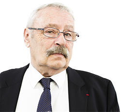
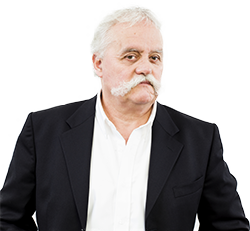

La réunion de trois personnalités
L'équipe
Henri Vacquin sur le terrain du management et des analyses des conflits du travail depuis les années 70, apporte la mémoire indispensable à la réflexion sociale et sociétale et une expérience reconnue dans les plus grandes entreprises et le milieu professionnel.
Dominique Legrand (jusqu’en 2015 Directeur des Relations Sociales et des Ressources Humaines ainsi que de la Sécurité-Sureté de l’Opéra de Paris) et Didier Morfoisse (Directeur Général des Ressources Humaines chez Chanel) apportent chacun quarante ans d’expérience du management des ressources humaines et plus généralement des comportements humains face au rapport de travail qu’il soit individuel ou collectif.
Professionnels du social réel de l’entreprise, ils ont pratiqué dans des univers très variés, privés et publics, français et internationaux. Consultants, managers opérationnels, médiateurs ils vous accompagneront dans vos projets collectifs, qu’il s’agisse de réorganisation, de restructuration, de mobilisation de vos équipes, en veillant à associer toutes les parties prenantes.
Ce sont des généralistes dont les personnalités et les compétences sont complémentaires qui ont décidé d’unir leurs capacités pour mener au mieux votre projet de changement, qu’il s’agisse de votre projet d’entreprise, de l’animation de votre comité de direction, de vos accords avec vos partenaires sociaux ou encore de votre politique de mobilisation et de communication interne avec la communautés des salariés. Persuadés que seule une vue d’ensemble alliée aux spécialisations les plus fines permet de mener un projet d’entreprise et une politique du changement, ils ont conçu
Résonances en réseau afin d’être en mesure de répondre au plus près de votre besoin et vous offrir une réactivité immédiate.
Ils fondent leur intervention dans votre entreprise sur l’analyse du réel, le respect et l’écoute de tous, conditions essentielles de l’adhésion.
-

Henri Vacquin
Sociologue des organisations, analyse des conflits du travail
En savoir +
-
Didier Morfoisse
Stratégie sociale et ressources humaines.
Elaboration et conduite de projets d’entreprise et de politiques du changement
Médiateur, Président de l’association français des médiateurs.
Coaching de dirigeants.
Recrutement.
En savoir +
-

Dominique Legrand
Stratégie sociale, accompagnement de la négociation, médiation de conflits du travail.
Organisation, stratégie RH, recrutement, communication, coaching.
En savoir +